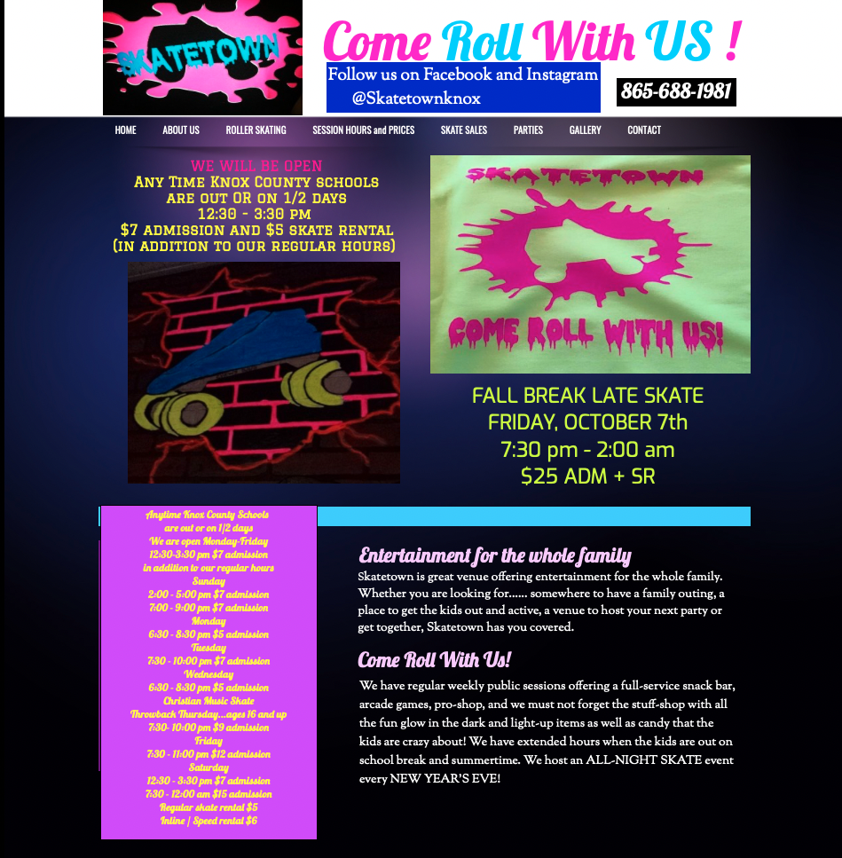
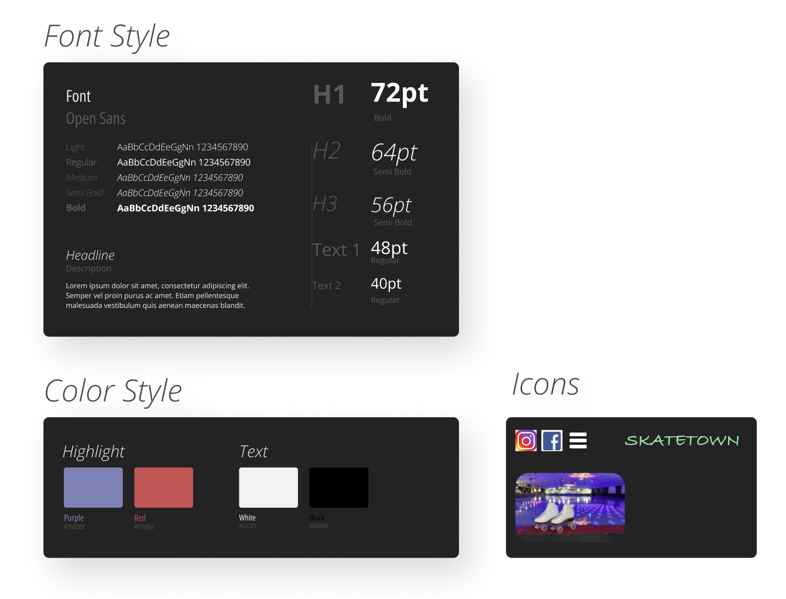

For this project, I wanted to find a website to redesign, but I also wanted the website I chose to be a website that is important to me. Therefore, I decided to choose the website of a place that I visited often as a child. This is that site.
Original Website When you look at the image above what is the first thing that pops into your head? If you are like me, then the first thing was probably the hideous design of the website. It isn't necessarily hard to navigate since there is so little content, but it is painful to look at and at times hard to read due to the colors chosen for the design
Futhermore, there are also some issues with accessibility that can make it hard for screen readers to both navigate and read the content.
In hopes of fixing some of these issues, I first designed three different lo-fi protypes of what a potential redesign of the website might look like. The first prototype details what a potential design for mobile view might look like with larger text, wrapping flex boxes and a drop down menu. The second and third prototype details tablets and desktop views and are mostly similar with the only real difference being font size. Both of these designs feature a menu bar with less cluster and an improved hours container. Futhermore, the social media is linked and can be accessed by clicking on the corresponding icon. Finally, there is an improved image with alt text.
I wanted to make the website feel less outdated, and easier on the eyes, and to do this. I needed a new color pallete on top of new icons. Therefore, I created a visual guide to help show off these new design choices.
After I designed the low fidelity protypes, the next thing that I needed to do was to develop a high fidelity protype for all 3 devices. By creating the low-fidelity prototypes, I had an idea of the layout that I wanted for the improved website design, but now I needed to think of the colors that I wanted for these prototypes.
Figma LinkNow that I had finished creating both the low fidelity and high fidelity prototypes. It was finally time to start coding the website. I started by writing the website in html and grouping the content together using divs, so that I could easily position it later using css. Now that I had the content, it was time to begin start making the website vibrant. Utilizing the color pallete that I had used for the high fidelity prototype, I began to make the website the way I had wanted to. Along the way, I had to deviate slightly from the original prototypes due to some things being harder to do than expected and other deviations were just design choices that I thought looked better. After several changes, I had finally created the improved website, and I am happy with the results.